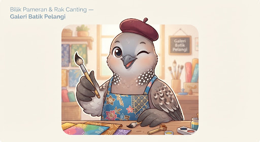
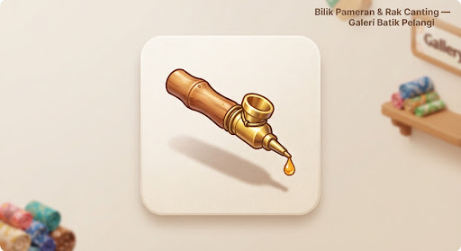
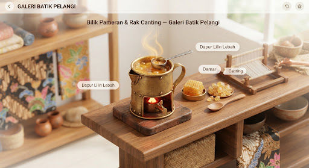
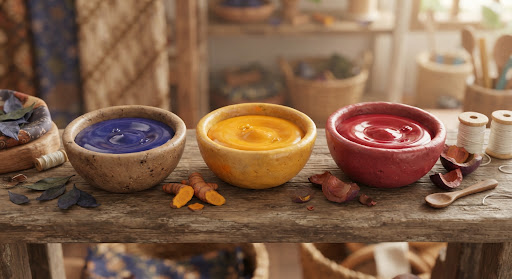

🏛️
Bahagian Dalam • Galeri Batik Pelangi
Tahap 1
Muzik Gamelan Lembut & Desiran Angin
Suasana Santai Bilik Pameran

visibility
Sudut Bengkel & Rak Canting

Cikgu Merbok
Guru Kraf
“Selamat datang ke bilik pameran kita, Wira Cilik! Sentuh canting tembaga di rak untuk mula melukis corak Bunga Raya sulung kamu hari ini!”
draw
3 Alatan Sedia
Rak Alatan Canting

Canting Tembaga Cilik
Tahap 1
check_circle Sedia Dipakai ✨

Kuali Lilin Lebah & Damar
Hangat
thermostat Suhu Selamat (Mesra Murid)

Pewarna Asli Tropika
3 Warna
eco 100% Organik & Wangi
gallery_thumbnail
Koleksi Karya Wira Cilik Tahun 1
Dinding Pameran Cilik
1 / 6 Karya
monetization_on Ganjaran Pelawat Galeri:
+15 Syiling / jam